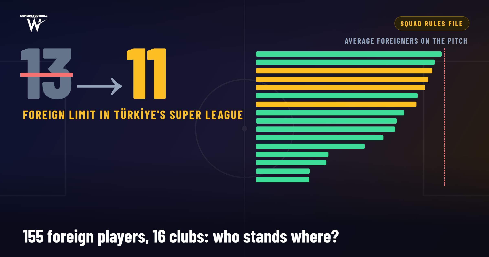

The Foreign Limit Is Shrinking: 155 Foreign Players in Türkiye's Super League, Club by Club
This season foreign players account for more than half of the minutes in the Turkish Women's Super League. In 2027-28 the registration limit drops from 13 to 11. Who is close to the limit, and what changes in the summer?

155 foreign players have made at least one matchday squad in the Turkish Women's Super League this season. They come from 55 different countries and they play more than half of the league's minutes: 51.8%.
Next season the rule changes. Today a club can register 13 foreign players; in 2027-28 the number will be 11. Who is close to that limit, who has work to do, and what happens in the summer window? We looked club by club.
The rule
This season 13 registered and 8 on the pitch. Next season 11 registered.
This season a club can register 13 foreign players, name up to 13 in a matchday squad and field at most 8 at the same time. Under the Turkish FA's 2026-27 regulations, the registration limit becomes 11 in the 2027-28 season. In short, squads lose two foreign places.
The regulations define a foreign player not by passport but by eligibility for Türkiye's senior national team. In practice, a player with Turkish citizenship does not count as foreign unless she is tied to another country's senior national team. We counted players with Türkiye among their nationalities as domestic.
To count, we did not use the squad lists on SoccerDonna but the foreign players who have made at least one Super League matchday squad this season. Squad pages can also list players who have left or were never registered; the matchday squad is the firmer measure.
Club by club
How many foreigners are on the pitch on average, and how many have been used?
The chart shows how many foreign players each club has on the pitch on average. The calculation is simple: the minutes played by foreign players, divided by the team's total minutes, times 11. The ceiling is 8, because no more foreigners can be on the pitch at the same time.
Average number of foreign players on the pitch, 2026-27
Minutes played by foreign players ÷ team's total minutes × 11. Amber: foreign players in matchday squads above the 2027-28 limit. Dashed line: at most 8 foreigners on the pitch at the same time.
1207 Antalya are at the top with 7.9 foreign players on average, close to the ceiling. Behind them come Yüksekovaspor (7.6), Kayserispor (7.5) and FOMGET (7.3). The league average is 5.7; at 10 of the 16 clubs, foreign players play more than half of the minutes. At the other end are Bakırköy Yenimahalle (2.3) and Giresun Sanayi (2.3), both built around domestic players.
On the squad side, four clubs are above the new limit. FOMGET and Galatasaray have used 13 foreign players in matchday squads this season, Kayserispor and Trabzonspor 12. Under today's rule that is fine; in 2027-28 these four clubs would be 6 over in total.
| CLUB | FOREIGN | ON PITCH | ENDING | BEYOND | UNKNOWN | DUAL |
|---|---|---|---|---|---|---|
| FOMGET | 13 | 7.3 | 11 | 1 | 1 | 4 |
| Galatasaray | 13 | 6.8 | 4 | 5 | 4 | 3 |
| Kayserispor | 12 | 7.5 | 11 | 0 | 1 | 2 |
| Trabzonspor | 12 | 7.2 | 11 | 0 | 1 | 1 |
| 1207 Antalya | 11 | 7.9 | 11 | 0 | 0 | 2 |
| Yüksekovaspor | 11 | 7.6 | 9 | 0 | 2 | 0 |
| Fenerbahçe | 11 | 6.3 | 8 | 3 | 0 | 4 |
| Ünye | 9 | 5.9 | 9 | 0 | 0 | 0 |
| Beşiktaş | 9 | 4.6 | 7 | 1 | 1 | 2 |
| Giresun Sanayi | 9 | 2.3 | 8 | 0 | 1 | 0 |
| Hakkarigücü | 8 | 6.9 | 8 | 0 | 0 | 0 |
| Amed | 8 | 6.0 | 8 | 0 | 0 | 0 |
| Sultanbeyligücü | 8 | 3.0 | 8 | 0 | 0 | 0 |
| Haymana | 7 | 5.4 | 7 | 0 | 0 | 1 |
| Şile Bilgidoğa | 7 | 3.1 | 6 | 0 | 1 | 0 |
| Bakırköy Yenimahalle | 7 | 2.3 | 7 | 0 | 0 | 1 |
FOREIGN: foreign players who have made at least one matchday squad this season. ON PITCH: average number of foreigners on the pitch. ENDING: contract ends by 30 June 2027 at the latest. BEYOND: contract runs into 2027-28. DUAL: players with Türkiye among their nationalities who have made a matchday squad (counted as domestic here). Some columns are hidden on phones.
Summer 2027
Contracts run out before the limit bites. The real question is squad depth.
At first sight a hard summer awaits those four clubs. The contracts tell a different story: of the 155 foreign players who have made a matchday squad, 133 have contracts that end by 30 June 2027 at the latest. Only 10 contracts run into 2027-28, and the end date is unknown for 12 players.
So clubs will largely rebuild their foreign contingent in the summer, and nobody has to let a player under contract go because of the new limit alone. Galatasaray have the most foreign players contracted beyond this season: 5, or 9 if the unknown end dates are included. That is still below 11.
The change will be felt in squad depth. A team that fields eight foreigners can have five more in reserve today; next season, if the on-pitch limit stays at 8, it will be three at most. During injuries and suspensions, domestic players will fill the gap.
Across the league, capacity is not the problem: the 16 clubs' foreign places drop from 208 to 176, and 155 foreign players have made a matchday squad this season. The squeeze is at the few clubs built on foreign players.
Nationalities and dual nationals
55 countries. And one group that does not count towards the limit.
The 155 foreign players come from 55 countries. Nigeria is the largest group (24), followed by Ghana (14); Brazil and Cameroon have 9 each. Players from African countries add up to 73, almost one in two foreign players.
Foreign players by nationality (top 10)
Foreign players with more than one nationality are counted under their first.
Dual nationals are a separate story. 20 players with Türkiye among their nationalities have made matchday squads this season: four each at FOMGET and Fenerbahçe, three at Galatasaray. Unless they are tied to another country's senior national team, they do not use a foreign place.
As the limit tightens, that profile becomes more valuable: a player who developed abroad but is eligible for Türkiye's senior national team can join a squad without using a foreign place.
Text: WFS Analysis Desk. Source: the Turkish FA's 2026-27 regulations for the foreign limit; SoccerDonna club squad pages for nationality and contracts; SoccerDonna match reports for matchday squads and minutes (82 matches with a report, last match 18 November 2026). The figures are not the Turkish FA's official registration list.
More files